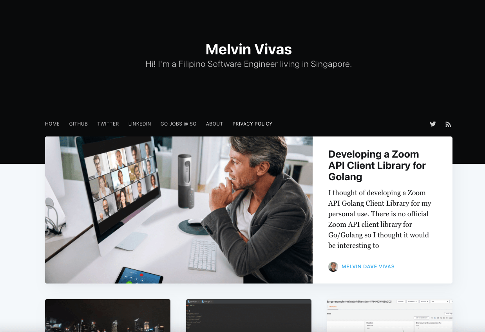

How I Started Learning Golang
And how you can get started too!


Introduction
Hey Cucumbers! In this article, I will be sharing more about how I started my Go programming journey and the steps I took to become more familiar with it.
A brief introduction to Go, or also colloquially known as Golang, is a programming language developed by Google in 2009. It is a relatively new language and is rapidly growing. The general sentiment of Go is that it is the new and improved C/C++ language -- syntactically easier language with amazing speed. Many companies such as Google, Uber, twitch, Paypal are users of Go and many more are hopping aboard the bandwagon.
The truth is that I had never heard of Go or Golang before I started working at Ohmyhome. It was only when I joined the Backend Team that I was introduced to the language. Go was completely foreign to me but I had to pick it up fast in order to start my work as a Backend Engineer Intern. And now, after spending a good amount of time programming in Go, I am slowly starting to fall in love with it. Here’s how I started!
Content Page
Udemy Course
My first teacher of Go was Todd Mcleod from this Udemy course that I purchased. The course is titled “Learn How To Code: Google's Go (golang) Programming Language”. I found it especially good because, for one, Todd Mcleod is an experienced Professor in Computer Science who taught the course in an engaging way. He shared more than just Go concepts but also life lessons and best learning practices.
Secondly, there were tutorials for practice that really helped with my understanding of Go. Todd also had video explanations of the tutorial answers which helped quite a bit! Lastly, he imbued in me the skill to conduct my own self-directed learning. This skill is none other than learning to read documentation. Later in the article, I will explain further why learning to read documentation is so important.
Just a disclaimer, I wasn’t sponsored to promote his course. I genuinely picked up a lot and want to share the same resource with you! Of course, there are many other great courses out there on Udemy. But overall, I think it is a great place to start.
Tour of Go

After completing Todd Mcleod’s online course, in order to reinforce my understanding of Go, I did a Tour of Go. I linked the Tour of Go here if you are interested. It was an interactive exercise that was a good summary of the Go language. Some of the topics include: packages, struct, slices, methods, interface and concurrency. Concurrency might be a bit more advanced, and it is completely fine to skip it!
I would recommend everyone to give a Tour of Go a shot, since it doesn’t take much time and it only serves to strengthen your foundation in Go.
Documentation
The official documentation of Go can be found at golang.org and it essentially describes how Go functions. For the most part, under Documentation, I focus on the Language Specification and Effective Go. Effective Go is similar to the Specification just that it is more readable and has examples of its usage for better clarity.
“It is the definitive source to answer questions about the language” - Todd Mcleod
Golang documentation, or rather all documentation in general is a real pain to read! I understand how daunting it may be to power through all the text, where half the time, you are unsure of what it means. However, the way I see it, it is a crucial skill to learn and in due time, the dense pile of text becomes slightly more digestible. Ultimately, if you are an aspiring programmer, there’s no escaping documentation. You will uncover parameters of a function that you never knew existed! Who knows, that parameter might just be the solution to your problem. Learning to read documentation is versatile and will definitely help when learning new things. It is a necessary evil.
Package documentation can also be found on golang.org. It holds the documentation of packages which contains pre-written code by other developers that you can use in your own scripts. Definitely comes in handy when you don’t want to build a function from scratch.
Additional Resources
On top of the above suggestions, I have also used other resources that proved to be extremely useful, especially for very specific problems that might not be covered in the general guides and tutorials.
Youtube
There are amazing tutorials about Golang that are not only informative but free too! Just search for the specific concept you wish to learn and 9 out of 10 times, someone has created a video explaining it. One such example is the Golang Crash Course by TraversyMedia.
Github
Github is a treasure trove of code written by other programming lovers where you can learn from by example. You can find code snippets written by Todd Mcleod on his github account.
Golang Playground
Golang Playground is a web-service which allows you to write your own Go code and test it out. Not to worry, it does the compiling for you and returns the output in your sandbox! It is really convenient especially for beginners if you don’t want to download an IDE, such as Goland which also costs a bomb! In addition, you can even share it with your friends with the link generated. No more copying and pasting the code that loses its structure over text!
Blogs
Blogs are another great resource to read up more about Golang. If you are looking for practical ways to use Go, check out Melvinvivas blog. He covers a variety of Golang use cases like building QR codes and data encryption.
Fun Fact! Melvin was one of my Golang mentors at Ohmyhome, the property tech company where I interned and he also learnt Go from Todd Mcleod. Coincidence!
Go by Example
If Github is not your thing, you can check out Go by Example, which is also another guide through the syntax of Go.
Conclusion
In conclusion, these are the few ways that I used to learn Go. Honestly, it wasn’t a simple task but it is definitely rewarding once I’ve understood the basics. It will be a long road ahead but I believe you got it in you to succeed! Stay cool Cucumbers!